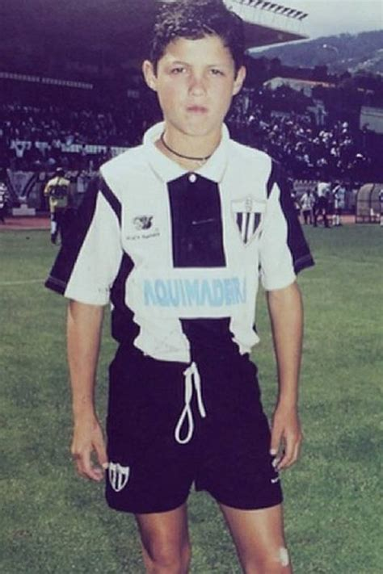

Cristiano Ronaldo dos Santos Aveiro nació el 5 de febrero de 1985 en Funchal, Madeira (Portugal). Desde muy pequeño mostró una gran pasión por el fútbol y comenzó a jugar en equipos locales de su isla.
Debutó profesionalmente en el Sporting de Lisboa, donde llamó la atención de grandes clubes europeos por su velocidad, técnica y disciplina.
Es uno de los jugadores más importantes en la historia de la selección portuguesa, con la que ha ganado la Eurocopa y la Liga de Naciones de la UEFA.
